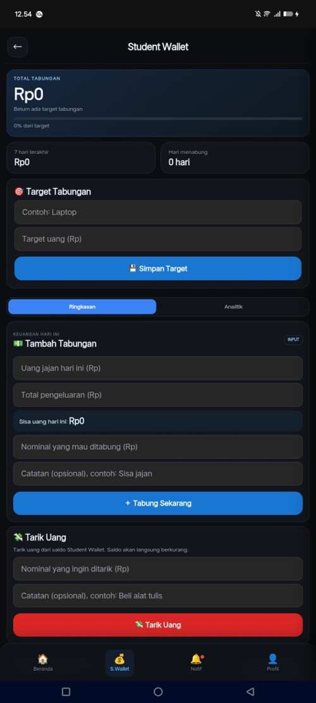
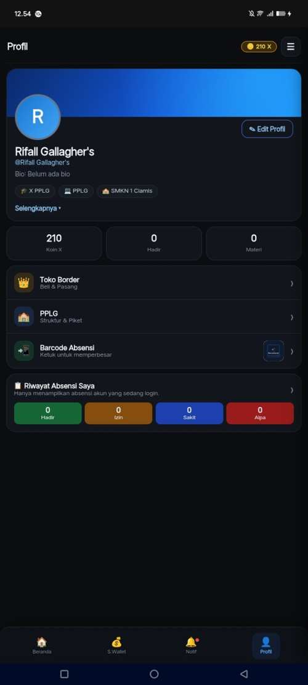

Learning hub
Quick access to learning materials, quizzes and school-related resources from the home dashboard.
PROJECT 01 / EDUCATION
A student-focused digital platform bringing learning tools and everyday school activities into a more organized experience.
INSIDE THE EXPERIENCE
Selected views from the StudyTrack X interface, covering its home dashboard, Student Wallet and student profile.



OVERVIEW
StudyTrack X is a digital learning and productivity project designed around the needs of students. It brings study-related tools and school activity features together in one accessible web experience.
The project explores how a lightweight, mobile-friendly platform can support everyday learning, personal organization and student engagement.
PRODUCT CAPABILITIES
Quick access to learning materials, quizzes and school-related resources from the home dashboard.
A central place to keep track of assignments and daily class schedules.
Personal savings goals, daily deposits, withdrawals and a summary of saving activity.
A personal area for profile information, Koin X, class access and attendance records.
PROJECT JOURNEY
The project brings together interface planning, front-end implementation and ongoing refinement based on the needs of its student audience.
Identify common student routines and the tools that can make them easier to manage.
Organize information into clear sections and build a consistent, mobile-first interface.
Implement the interface and interactive features with web technologies.
Review the experience and evolve the product as requirements become clearer.
BUILD DETAILS
StudyTrack X is presented as a browser-based web project. Its current public version is hosted on GitHub Pages.
The stack shown here reflects the front-end and hosting approach of the public project.
EXPLORE THE LIVE PRODUCT